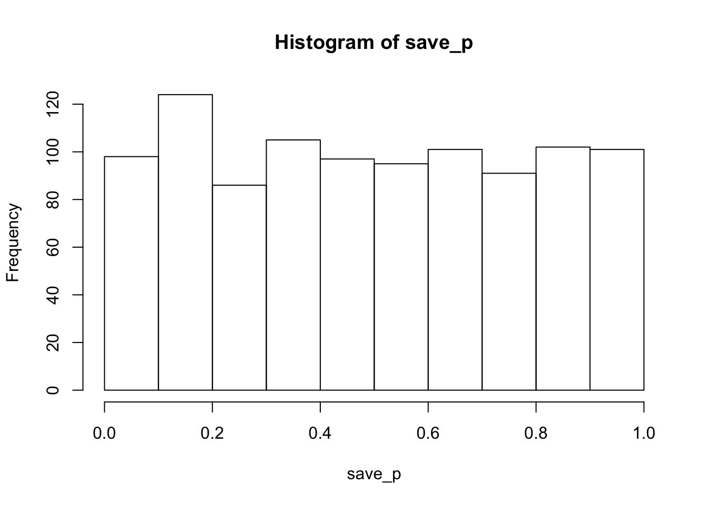

Various musings
Using this mainly as a place to make notes for myself so I don’t forget what I’m doing. I own my spelling mistakes and sell them on e-bay.
Why is the p-distribution flat under the null?
2018-07-21, last compiled: 2018-07-21
The \(p\)-distribution is flat under the null, it is made to be this way. Let’s understand why. First, a simulation to show that the \(p\)-distribution is flat under the null. We start with the null distribution. Here, I sampled data from a normal (u=0, sd=1), ran a t-test, saved the \(p\)-value, repeated 1000 times, then put the \(p\)-values into a histogram. You can see it’s mostly flat across the range 0-1.
library(ggplot2)
save_p<-length(1000)
for(i in 1:1000){
save_p[i] <- t.test(rnorm(20,0,1))$p.value
}
hist(save_p)
Roughly, this means you are just as likely to get a \(p\)-value between 0 and 0.05, as you are to get one between .95 and 1. This is one reason why the size of the \(p\)-value does not allow you to have more or less evidence for the null, because under the null, you have the same chances of getting any \(p\)-value. A \(p\)-value of 0.9 does not give more evidence for the null than a \(p\)-value of .5.
Ok, so the simulation shows that the \(p\)-distribution is flat under the null, but why is it flat? The \(t\)-distribution isn’t flat. Aren’t \(t\)’s around 0 the most frequently occurring values? Aren’t those \(t\)’s associated with particular \(p\)-values, shouldn’t those particular \(p\)-values occur with the same frequency as their associated \(t\)s? This way of thinking is a bit of a trap, it might be one reason why people would expect the \(p\)-distribution to go up and down.
\(p\)’s are not the probability of specific \(t\)’s
Perhaps a common misinterpretation of \(p\)-values is that they represent the probability of getting a particular \(t\)-value. This is not what they represent. Instead, \(p\)’s represent ranges of t-values. Some examples:
When \(t\) = 0, \(p\) = 1. Obviously you do not have a 100% chance of getting a \(t\) of 0 every time under the null. Instead, you have a 100% chance of getting a \(t\) that is 0 or larger (in absolute value) than 0.
Under a two-tailed test, when \(p\) = .95, this does not mean you have a 95% chance of getting the specific \(t\) you observed. It means you have a 95% chance of getting the \(t\) you observed or greater (absolute value).
The percentage of \(t\)’s associated with the \(p\)-range: .9 and .95 are 5% of the total \(t\)’s. The percentage of \(t\)’s associated with the \(p\)-range: .5-.55 are 5% of the total \(t\)’s. The percentage of \(t\)’s associated with the \(p\)-range: .05 - 0 are 5% of the total. It’s always 5%. If you split up the \(t\)-distribution into regions of 5%, then there are 20 regions, each having the same proportion of t-values. These regions are the p-values, and they are why the p-distribution is flat.
Let’s look at the \(t\)-distribution, and see how it is split up into p-values. Here’s the \(t\)-distribution for the null (1000 simulations).
save_t<-length(1000)
for(i in 1:1000){
save_t[i] <- t.test(rnorm(20,0,1))$statistic
}
qplot(save_t)+
geom_histogram( aes(bins=50), color="white")+
theme_classic()
The \(t\)-distribution is certainly not flat. Most \(t\)’s are around 0, and larger or smaller \(t\)’s happen with increasingly smaller frequency.
The whole point of the \(t\)-distribution is to show the behavior of \(t\) under the null. Once we obtain the distribution, we then apply decision boundaries to the distribution (at least under some philosophies). The \(p\)-distribution is defined by how the decision rules are applied. And, the way we apply the rules makes the \(p\)-distribution flat.
For example, let’s say we want to only have two decisions boundaries, A and B. It would look like this:
qplot(save_t)+
geom_histogram( aes(bins=50), color="white")+
geom_vline(xintercept=0, color="red", size=2)+
annotate("text", x=-2.5, y=100, label="A (50%)")+
annotate("text", x=2.5, y=100, label="B (50%")+
theme_classic()
Under the null, you would make Decision A half of the time, and Decision B half of the time. If you simulated this a bunch of times, got a t-value, then saved your decision (A or B), and then made a bar plot of the number of times you said A or B, it would be roughly flat.
Let’s do the above, but instead of splitting into two equal regions of 50%. We split the t-distribution into equal regions of 5%. This creates 20 regions. In the figure, the white space between each red line shows where 5% of \(t\)’s will be found.
ordered_t<-sort(save_t)
spacing<-ordered_t[seq(0,1000,50)]
spacing[1]<--4
spacing[20]<-4
qplot(save_t)+
geom_histogram( aes(bins=50), color="white")+
geom_vline(xintercept=spacing, color="red", size=1)+
annotate("text", x=-2.5, y=100, label="5%")+
annotate("text", x=2.5, y=100, label="5%")+
theme_classic()
If you used these decision regions, you would find \(t\)’s inside each band 5% of the time. The bands have different widths to accommodate the fact that \(t\)’s have different probabilities across the range.
This top graph is a little deceiving with respect to two-tailed t-testing. We could see things a little more clearly if we plotted the absolute value of \(t\)’s. This will make a right skewed histogram, with t starting at 0 and getting bigger. We can apply the same 20 regions.
ordered_t<-sort(abs(save_t))
spacing<-ordered_t[seq(0,1000,50)]
spacing[1]<-0
spacing[20]<-4
qplot(abs(save_t))+
geom_histogram( aes(bins=50), color="white")+
geom_vline(xintercept=spacing, color="red", size=1)+
annotate("text", x=3, y=100, label="5%: this bin is \n p<=.05")+
annotate("text", x=1.9, y=100, label="5%")+
annotate("text", x=1.65, y=100, label="5%")+
annotate("text", x=1.45, y=100, label="...")+
theme_classic()
Make a free Introductory Cognitive Psych textbook with online experiments
2018-07-21, last compiled: 2018-07-21
I recently wrote this proposal, plan is to do it during fall 2018-Spring 2019.
From my email correspondence (note to self to edit this later):
Create a new OER intro textbook for Cognitive Psychology, essentially from scratch. As I mentioned earlier, I have scoured the web for suitable existing OER material to build off of, but this area is lacking in OER content. So, I (and or a group of collaborators) would have to write the content for the proposed textbook. I would imagine the writing process would take 6-8 months. The book would be delivered in the same web-book format I have been using for other OERs, using the bookdown package
- Create online interactive experiments and embed them into the web-book.
- Teaching students about the field of Cognitive Psychology primarily involves explaining how researchers use experiments to test theories of cognitive processes (how people learn, remember, pay attention, perceive, make decisions, etc.). Foundational concepts usually come in the unit of an experimental finding. To understand the concept, students must understand the question the experiment was asking, the method used to conduct the experiment, the result obtained from the experiment, and the inference made from the result about the original question.
- Standard print textbooks can describe some of the above to students, but they can’t give students the experience of what it is like to be a participant in a particular experiment. And, when students lack concrete understanding about what happened in an experiment, they often fail to grasp how to interpret the results. Some textbooks come with a pay-to-use online experiment platform. We’ll make a free one.
- Fortunately, many important experiments in Cognitive Psychology that are taught in intro classes can be programmed and implemented in web-browsers (and, I have expertise in this area because my lab has pioneered the use of web-browsers for running cognitive psychology experiments). This means that when a foundational experiment is introduced in the textbook, as a part of learning about the experiment, a student would participate in the experiment themselves via their web-browser. Using Shiny we would also be able to present student-generated experimental results alongside the classic findings.
To summarize, I would plan to write a textbook and write interactive online experiments for each chapter
[let’s see if that happens]
How do I use R to list my publications on this webpage?
2018-07-21, last compiled: 2018-07-21
Maybe get them to auto print from a .bib file. That way I can update everything in Zotero, output a .bib file, then automatically list everything… hmmm…
How about testing this here and seeing what happens.
Get .bib file from Zotero library of my papers, put it in this folder.
try install.packages(“bib2df”) to convert bib to a data.frame, then write something to do what I want to spit out everything nicely, maybe in a kable table, or something.
library(bib2df)
bib_df<-bib2df(file="Crump.bib")That seemed to work nice. Needed to add a few missing years to the .bib file. Ok, just need to write a loop…need to remove special characters in bibfile…Cool, basically got it working. Need to update bib file to check for errors. Need to add a catch for papers that aren’t articles… Going to move this code over to the publications page and modify from there.
library(stringi)
bib_df$TITLE<-stri_replace_all_regex(bib_df$TITLE, "[\\{\\}]", "")
bib_df$JOURNAL<-stri_replace_all_regex(bib_df$JOURNAL, "[\\{\\}]", "")
# sort bib_df by year
bib_df<-bib_df[order(bib_df$YEAR, decreasing=T),]
dims<-dim(bib_df)
for(i in 1:dims[1]){
a<-bib_df$FILE[i]
split_a<-unlist(strsplit(a,":"))
file_path<-paste0("https://github.com/CrumpLab/CrumpLab.github.io/raw/master/",split_a[2])
cat(c("####",bib_df[i,]$TITLE)) #title
cat(c("\n"))
cat(c(cat(bib_df[i,]$AUTHOR[[1]],sep=", "), " (",
bib_df[i,]$YEAR, "). ",
bib_df[i,]$TITLE, ". *",
bib_df[i,]$JOURNAL, ", ",
bib_df[i,]$VOLUME, "*, ",
bib_df[i,]$PAGES, "."), sep="")
if(is.na(a)==FALSE){
cat(c(" ", "[pdf](",file_path,")"), sep="")
}
cat(c("\n"))
cat(c("\n"))
}Context-dependent control of attention capture: Evidence from proportion congruent effects
Crump, M. J. C., Milliken, Bruce, Leboe-McGowan, Jason P., Leboe-McGowan, Launa C., Gao, X (2018). Context-dependent control of attention capture: Evidence from proportion congruent effects. Canadian Journal of Experimental Psychology, NA, NA.
Spatial knowledge during skilled action sequencing: Hierarchical versus non-hierarchical representations
Behmer, Lawrence P., Crump, M. J. C. (2018). Spatial knowledge during skilled action sequencing: Hierarchical versus non-hierarchical representations. Attention, Perception & Psychophysics, NA, NA.
Crunching big data with finger tips: How typists tune their performance towards the statistics of natural language
Behmer, Lawrence P., Crump, M. J. C. (2017). Crunching big data with finger tips: How typists tune their performance towards the statistics of natural language. NA, NA, 319–341.
False recognition of instruction-set lures
Curtis, Evan T., Chubala, Chrissy M., Spear, Jackie, Jamieson, Randall K., Hockley, William E., Crump, M. J. C. (2016). False recognition of instruction-set lures. Memory, 24, 32–43. pdf
Learning to Selectively Attend From Context-Specific Attentional Histories: A Demonstration and Some Constraints
Crump, M. J. C. (2016). Learning to Selectively Attend From Context-Specific Attentional Histories: A Demonstration and Some Constraints. Canadian Journal of Experimental Psychology, 70, 59–77. pdf
Reproducing the location-based context-specific proportion congruent effect for frequency unbiased items: A reply to Hutcheon & Spieler (2016)
Crump, M. J. C., Brosowsky, Nicholaus P., Milliken, Bruce (2016). Reproducing the location-based context-specific proportion congruent effect for frequency unbiased items: A reply to Hutcheon & Spieler (2016). The Quarterly Journal of Experimental Psychology, NA, 1–41. pdf
Context-specific attentional sampling: Intentional control as a pre-requisite for contextual control
Brosowsky, Nicholaus P., Crump, M. J. C. (2016). Context-specific attentional sampling: Intentional control as a pre-requisite for contextual control. Consciousness and Cognition, NA, NA.
Speed–accuracy trade-off in skilled typewriting: Decomposing the contributions of hierarchical control loops.
Yamaguchi, Motonori, Crump, M. J. C., Logan, Gordon D. (2013). Speed–accuracy trade-off in skilled typewriting: Decomposing the contributions of hierarchical control loops.. Journal of Experimental Psychology: Human Perception and Performance, 39, 678–699. pdf
Prevention and correction in post-error performance: An ounce of prevention, a pound of cure.
Crump, M. J. C., Logan, Gordon D. (2013). Prevention and correction in post-error performance: An ounce of prevention, a pound of cure.. Journal of Experimental Psychology: General, 142, 692–709. pdf
Evaluating Amazon’s Mechanical Turk as a tool for experimental behavioral research
Crump, M. J. C., McDonnell, John V., Gureckis, Todd M. (2013). Evaluating Amazon’s Mechanical Turk as a tool for experimental behavioral research. PLoS ONE, 8, e57410. pdf
An instance theory of associative learning
Jamieson, Randall K., Crump, M. J. C., Hannah, Samuel D. (2012). An instance theory of associative learning. Learning & Behavior, 40, 61–82. pdf
Keeping an Eye on Guitar Skill: Visual Representations of Guitar Chords
Crump, M. J. C., Logan, Gordon D., Kimbrough, Jerry (2012). Keeping an Eye on Guitar Skill: Visual Representations of Guitar Chords. Music Perception: An Interdisciplinary Journal, 30, 37–47. pdf
In support of a distinction between voluntary and stimulus-driven control: A review of the literature on proportion congruent effects
Bugg, Julie M., Crump, M. J. C. (2012). In support of a distinction between voluntary and stimulus-driven control: A review of the literature on proportion congruent effects. Frontiers in Psychology, 3, 1–16. pdf
Review of Guitar zero: The new musician and the science of learning.
Crump, M. J. C. (2012). Review of Guitar zero: The new musician and the science of learning.. NA, NA, NA.
Hierarchical control of cognitive processes: The case for skilled typewriting
Logan, Gordon D., Crump, M. J. C. (2011). Hierarchical control of cognitive processes: The case for skilled typewriting. NA, 54, 1–27. pdf
Episodic contributions to sequential control: Learning from a typist’s touch.
Crump, M. J. C., Logan, Gordon D. (2010). Episodic contributions to sequential control: Learning from a typist’s touch.. Journal of Experimental Psychology: Human Perception and Performance, 36, 662–672. pdf
Warning: This keyboard will deconstruct— The role of the keyboard in skilled typewriting
Crump, M. J. C., Logan, Gordon D. (2010). Warning: This keyboard will deconstruct— The role of the keyboard in skilled typewriting. Psychonomic Bulletin & Review, 17, 394–399. pdf
A memory-based account of retrospective revaluation.
Jamieson, Randall K., Hannah, Samuel D., Crump, M. J. C. (2010). A memory-based account of retrospective revaluation.. Canadian Journal of Experimental Psychology, 64, 153–164. pdf
Hierarchical control and skilled typing: Evidence for word-level control over the execution of individual keystrokes.
Crump, M. J. C., Logan, Gordon D. (2010). Hierarchical control and skilled typing: Evidence for word-level control over the execution of individual keystrokes.. Journal of Experimental Psychology: Learning, Memory, and Cognition, 36, 1369–1380. pdf
Contextual control over task-set retrieval
Crump, M. J. C., Logan, Gordon D. (2010). Contextual control over task-set retrieval. Attention, Perception & Psychophysics, 72, 2047–2053. pdf
Do you know where your fingers have been? Explicit knowledge of the spatial layout of the keyboard in skilled typists
Liu, Xianyun, Crump, M. J. C., Logan, Gordon D. (2010). Do you know where your fingers have been? Explicit knowledge of the spatial layout of the keyboard in skilled typists. Memory & Cognition, 38, 474–484. pdf
Applying Signal Detection Theory to Contingency Assessment
Siegel, Shepard, Allan, Lorraine G., Hannah, Samuel D., Crump, M. J. C. (2009). Applying Signal Detection Theory to Contingency Assessment. Comparative Cognition & Behavior Reviews, 4, 116–134. pdf
Cue-interaction effects in contingency judgments using the streamed-trial procedure.
Hannah, Samuel D., Crump, M. J. C., Allan, Lorraine G., Siegel, Shepard (2009). Cue-interaction effects in contingency judgments using the streamed-trial procedure.. Canadian Journal of Experimental Psychology/Revue canadienne de psychologie expérimentale, 63, 103–112. pdf
The flexibility of context-specific control: Evidence for context-driven generalization of item-specific control settings
Crump, M. J. C., Milliken, Bruce (2009). The flexibility of context-specific control: Evidence for context-driven generalization of item-specific control settings. The Quarterly Journal of Experimental Psychology, 62, 1523–1532. pdf
The left hand doesn’t know what the right hand Is doing: The disruptive effects of attention to the hands in skilled typewriting
Logan, Gordon D., Crump, M. J. C. (2009). The left hand doesn’t know what the right hand Is doing: The disruptive effects of attention to the hands in skilled typewriting. Psychological Science, 20, 1296–1300. pdf
Probe-specific proportion task repetition effects on switching costs
Leboe, J. P., Wong, J., Crump, M. J. C., Stobbe, K. (2008). Probe-specific proportion task repetition effects on switching costs. Perception & Psychophysics, 70, 935–945. pdf
Shifting views on the symbolic cueing effect: Cueing attention through recent prior experience
Crump, M. J. C., Milliken, Bruce, Ansari, Imran (2008). Shifting views on the symbolic cueing effect: Cueing attention through recent prior experience. Psicológica, 29, 97–114. pdf
Context-specific learning and control: The roles of awareness, task relevance, and relative salience
Crump, M. J. C., Vaquero, Joaquín M.M., Milliken, Bruce (2008). Context-specific learning and control: The roles of awareness, task relevance, and relative salience. Consciousness and Cognition, 17, 22–36. pdf
The psychophysics of contingency assessment
Allan, Lorraine G., Hannah, Samuel D., Crump, M. J. C., Siegel, Shepard (2008). The psychophysics of contingency assessment. Journal of Experimental Psychology: General, 137, 226–243. pdf
Contingency judgements on the fly
Crump, M. J. C., Hannah, Samuel D., Allan, Lorraine G., Hord, Lauren K. (2007). Contingency judgements on the fly. The Quarterly Journal of Experimental Psychology, 60, 753–761. pdf
Contingency learning without awareness: Evidence for implicit control
Schmidt, James R., Crump, M. J. C., Cheesman, Jim, Besner, Derek (2007). Contingency learning without awareness: Evidence for implicit control. Consciousness and Cognition, 16, 421–435. pdf
The context-specific proportion congruent Stroop effect: Location as a contextual cue
Crump, M. J. C., Gong, Zhiyu, Milliken, Bruce (2006). The context-specific proportion congruent Stroop effect: Location as a contextual cue. Psychonomic Bulletin & Review, 13, 316–321. pdf